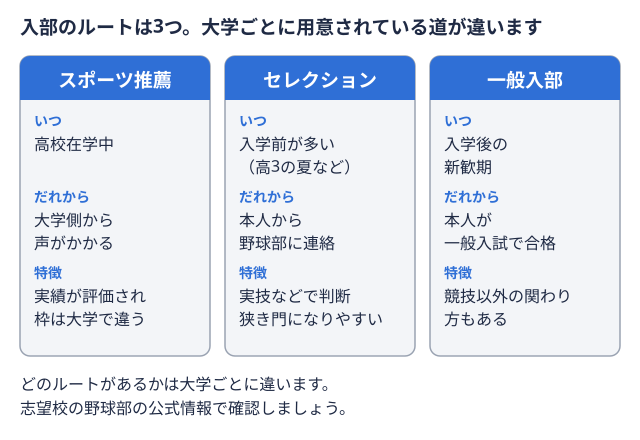
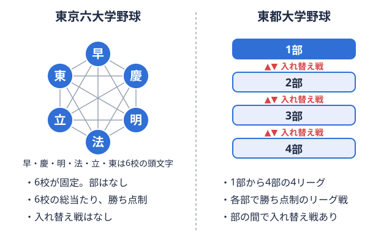

進路ガイド 2026-11-25
大学野球部は浪人してからでも目指せる？スポーツ推薦・セレクション・一般入部の出願資格を解説
「現役で志望校に合格できなかったが、浪人してでも大学野球部でプレーしたい」——高校を卒業する時点でそう考える球児・保護者は少なくありません。ただし、大学野球部への入部ルートには「スポーツ推薦高校時代の競技の実績などをもとに、大学が選考して入学を認める方式。名称や条件は大学ごとに違うので、入試要項で確認する。 
大学野球部への入り方は「現役限定」ではない
まず前提として、大学野球部への入部ルートは「スポーツ推薦」「セレクション」「一般入部」の3つに分かれます（詳しくは高校球児が大学野球部に入るにはをご覧ください）。このうち、現役・浪人の扱いが入試制度に直接関わってくるのは主にスポーツ推薦で、セレクション・一般入部は現役・浪人の区別そのものが前提になっていない点がポイントです。
スポーツ推薦（学校推薦型選抜など）は高校の推薦が前提になりやすい
スポーツ推薦の多くは、学校推薦型選抜（旧推薦入試）という入試区分で実施されています。学校推薦型選抜は出身高校の校長による推薦書の提出が前提となる制度のため、卒業後に時間が経つほど、高校側の進路指導室を通じた手続きという点でハードルが上がりやすいのが実情です。一方で、既卒者向けに「公募制」の学校推薦型選抜を設け、卒業後の生徒でも出身高校を通じて出願できる仕組みを用意している大学もあります。また、総合型選抜（旧AO入試）の形でスポーツ推薦を実施している大学では、現役・既卒を明確に区別していない例もあります。つまり「浪人＝スポーツ推薦は一律で出願不可」ではなく、大学・学部・入試区分ごとに条件が大きく異なるというのが正確な理解です。詳しい出願条件の確認ポイントは大学野球のスポーツ推薦の解説、学費面の扱いは特待生制度の解説で整理しています。
セレクション・一般入部は現役・浪人を問わない
これに対して、セレクションは本人が野球部に直接コンタクトを取り、練習参加入部や進学を考える人が、大学野球部の練習に実際に加わって体験すること。入部の前に必ず参加するよう求める大学もある。用語辞典で見るや実技試験を経て入部の可否が判断される仕組みであり、出願資格そのものに現役・既卒の区別を設けていないケースが一般的です。一般入部も、一般入試に合格して入学した後に新入生歓迎期間を通じて加入するルートのため、浪人を経て一般入試で合格した学生にも等しく開かれています。セレクションの解説と練習参加・見学の解説もあわせて確認しておくと、浪人中からできる準備がイメージしやすくなります。
浪人中に大学野球部を目指す3つの現実的なルート
浪人を選んだ場合、大学野球部を目指す現実的な選択肢は主に次の3つに整理できます。
| ルート | 内容 | 浪人中に意識したいこと |
|---|---|---|
| 一般入試＋一般入部 | 一般入試で合格し、新歓期にセレクション・練習参加を経て入部 | 受験勉強と競技力維持の両立、志望校の部の雰囲気を事前にリサーチ |
| セレクション経由 | 浪人中または合格後にセレクションへ参加し、実技で評価を受ける | 実施時期・応募条件を大学公式サイト・SNSで継続的に確認 |
| 既卒者向け推薦 | 大学が既卒者向けに設ける公募制の学校推薦型選抜などに出願 | 出身高校の進路指導室に既卒生向け制度の有無を早めに相談 |
予備校と部活動の両立をどう考えるか
浪人期間は受験勉強が最優先になる一方、1年以上競技から離れると実戦感覚や体力を取り戻すのに時間がかかるという声も聞かれます。志望校のレベルによっては、入部後すぐに戦力として求められる場合もあるため、予備校の授業と並行して自主練習の時間を確保できるかどうかも、浪人を選ぶ前に検討しておきたいポイントです。
出身高校の進路指導室には早めに相談する
学校推薦型選抜・総合型選抜のいずれも、出身高校を通じた手続きが必要になる場合があります。卒業後は高校とのやり取りの機会が限られるため、浪人を決めた時点で「既卒生向けの推薦制度を利用する可能性があるか」を進路指導室に伝えておくと、出願シーズンになって慌てずに済みます。
志望校のレベル・雰囲気は浪人中にも確認しておきたい
浪人中であっても、志望校がどのリーグ・どの部で戦っているかは早めに確認しておくべき情報です。東京六大学野球連盟は6校による総当たりリーグの全チームが、ほかのすべてのチームと対戦する方式。東京六大学では6校がそれぞれ他の5校と戦う。 
まとめ
大学野球部への入部は「現役でなければ不可能」という一律のルールではなく、スポーツ推薦は大学・入試区分によって既卒者の扱いが分かれる一方、セレクション・一般入部は現役・浪人を問わず開かれているルートです。浪人を選ぶ場合は、出身高校の進路指導室へ早めに相談しつつ、志望校の募集要項を直接確認し、受験勉強と競技力維持をどう両立させるかをあらかじめ考えておくことが大切です。まずはベースボールマニアのトップページで志望校の所属リーグ・直近の戦績を確認し、進路研究の第一歩にしてみてください。
出典
部活を続けながら、就活も進めたい方へ
体育会の学生のための就活相談です。無料で、メールアドレス・学年・所属の入力だけで始められます。